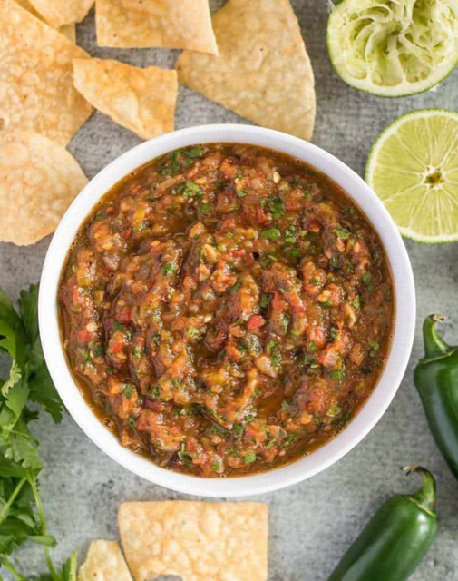

Roasted Salsa

- 3-4 Tomatoes
- 4-5 Tomatillos
- 1 medium white onion
- 3-5 cloves of Garlic(chopped)
- 2-5 Serano peppers(depending on how spicy)
- 1 cup Cilantro plucked
- 1-3 teaspoon salt
- Preheat Oven: set the oven to Broilhigh
- Quarter onion
- Arrange all vegetables (except garlic and cilantro) on anat least one inch high oven pan -- coat in vegetable oil
- Place Pan in broiler-- or the top shelf of oven with broil setting high
- Roast vegetables until they start to blacken -- rotate if necissary
- Rest vegetables until cool enough to handle
- Remove skin from tomatos and peppers
- Collect all vegetables and add them to a food processor or molcajete
- Pulse or Mash until desired consitency
- Refrigerate until ready to serve!